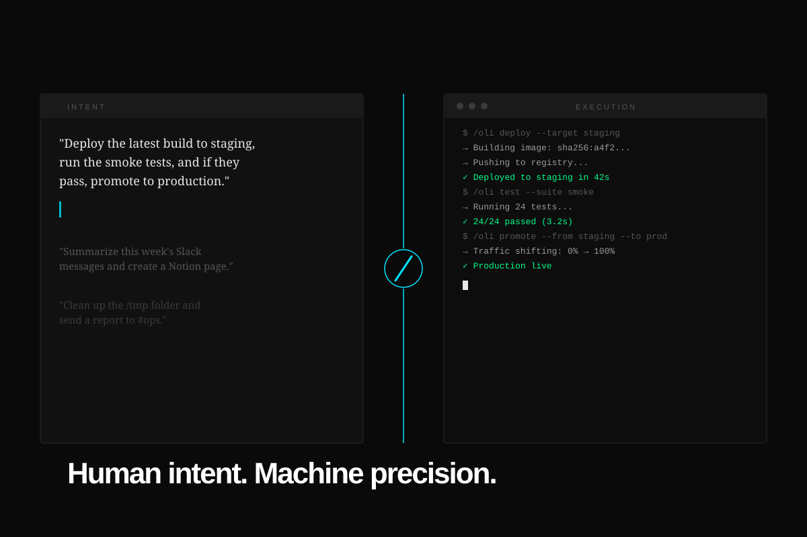
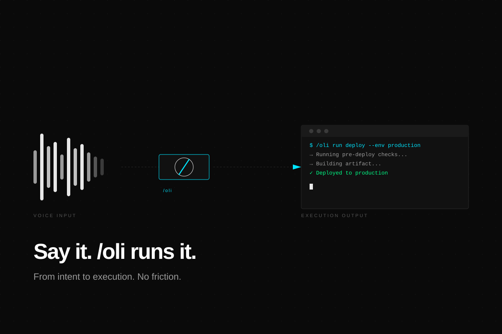
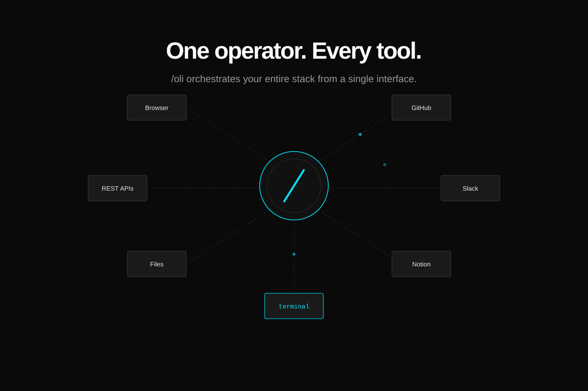
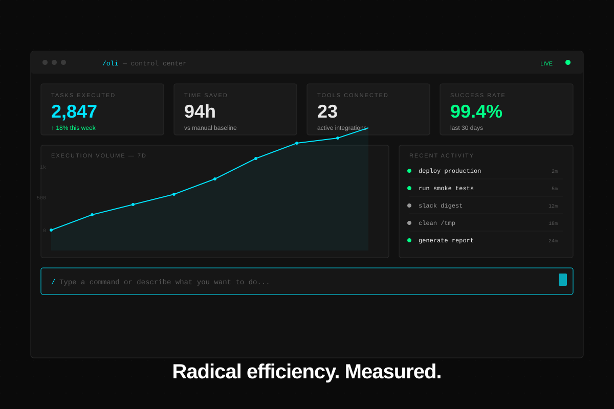
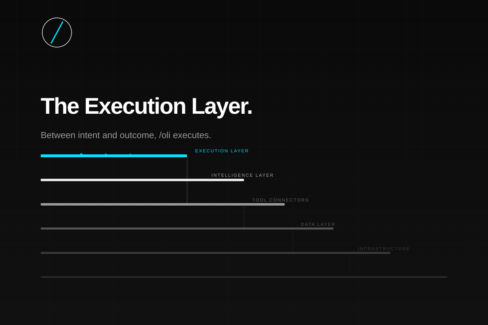

La computadora, por fin, entendió.
Utiliza las flechas del teclado para navegar →
No somos otro chatbot. Somos una capa de ejecución AI-first. La marca nace de la intersección entre la orden técnica y la cercanía.
Representa comando, ejecución, terminal y acción. "Soy comando".
Suena a saludo, compañero accesible e hiper-humano. "Soy cercano".
Aprovechar activos, herramientas y cómputo existentes. Cero greenwashing.
Conectar intención, planeación y ejecución sin saltar de pestañas.
La IA es el motor, no un adorno. El humano decide, la máquina ejecuta.
Eliminar el "teatro operativo", las aprobaciones absurdas y los pasos inútiles.
Elegir siempre la ruta que devuelva el mejor valor (local vs premium).
"Tu calendario no necesita motivación. Necesita automatización."
Ser directo, útil, transparente y con un toque de irreverencia contra la fricción o la ineficiencia.
Nunca burlarse del usuario por no saber programar. No ser un SaaS corporativo tibio ni un robot "cute".
Minimalismo industrial. Alto contraste. Un vacío arquitectónico diseñado para que resalte la ejecución.
El fondo arquitectónico.
Para legibilidad pura.
La intención y la acción. Todo lo que importa.
Exclusivo para estados de éxito.
/oli run deploy --env production
Para la lectura humana, interfaces neutras y explicaciones sin fatiga visual.
Una fusión de rutas para distintos contextos.
El Slash Command. Audaz, distintivo y conceptualmente perfecto.
Industrial Minimal. Máxima precisión. Como una marca certificada.
La marca no lanza confeti al terminar un trabajo. Entrega total transparencia radical. La mejor versión de /oli no dice "confía en mí". Dice: "mira cómo lo hice".
Así se materializa el diseño Pragmatic Void en interfaces de uso real.

La interfaz clásica, limpia y focalizada en los logs y comandos.

La abstracción conversacional, convirtiendo lenguaje natural a instrucciones precisas.
El control total de herramientas conectadas y dashboards de eficiencia en un solo lugar.

Integración de herramientas para flujos complejos ("stack con dirección").

Panel de métricas, visibilidad de automatizaciones y reportes de valor entregado.

/oli — Capa de ejecución AI-first